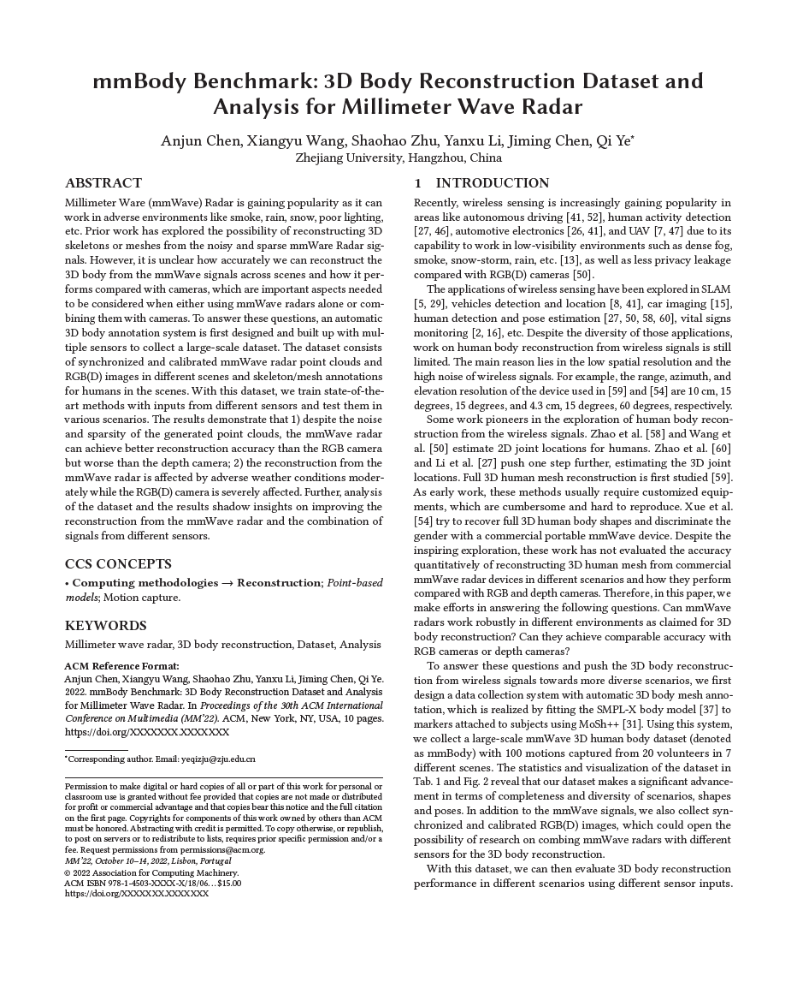

<<<<<<< HEAD To download the dataset, please send us an e-mail (anjunchen@zju.edu.cn) including contact details (title, full name, organization, and country) and the purpose for downloading the dataset. Important note for students and post-docs: we hope to konw the contact details of your academic supervisor. By sending the e-mail you accept the following terms and conditions. ======= To download the dataset, please send us an e-mail (anjunchen@zju.edu.cn) including contact details (title, full name, organization, and country) and the purpose for downloading the dataset. Important note for students and post-docs: we also need to konw the contact details of your academic supervisor. By sending the e-mail you accept the following terms and conditions. >>>>>>> 5fe75164eaaebc2863a4b97cfed780b653963f15
When you download and use the mmBody dataset, please carefully read the following terms and conditions. Downloading and using the dataset means you have read and agree to them. Any violation of the terms of this agreement will automatically terminate your rights under this license.
The materials are developed at the State Key Laboratory of Industrial Control Technology in Zhejiang University. Any copyright and patent right are owned by it.
- The dataset is only available for non-commercial academic research and education purposes.
- Any other use, including incorporation in a commercial product, using in a commercial service, and further developing commercial products is banned.
- The dataset can't be modified, re-sold and redistributed without our permission.
- Please reference the paper when you make use of the dataset and idea.
For any questions of the dataset, please send email to qi.ye@zju.edu.cn
|  |
@inproceedings{chen2022mmbody, title={mmBody Benchmark: 3D Body Reconstruction Dataset and Analysis for Millimeter Wave Radar}, author={Chen, Anjun and Wang, Xiangyu and Zhu, Shaohao and Li, Yanxu and Chen, Jiming and Ye, Qi}, booktitle={Proceedings of the 30th ACM International Conference on Multimedia}, pages={3501--3510}, year={2022} } |
Contact: Anjun Chen, Qi Ye
Page template borrowed from gkioxari